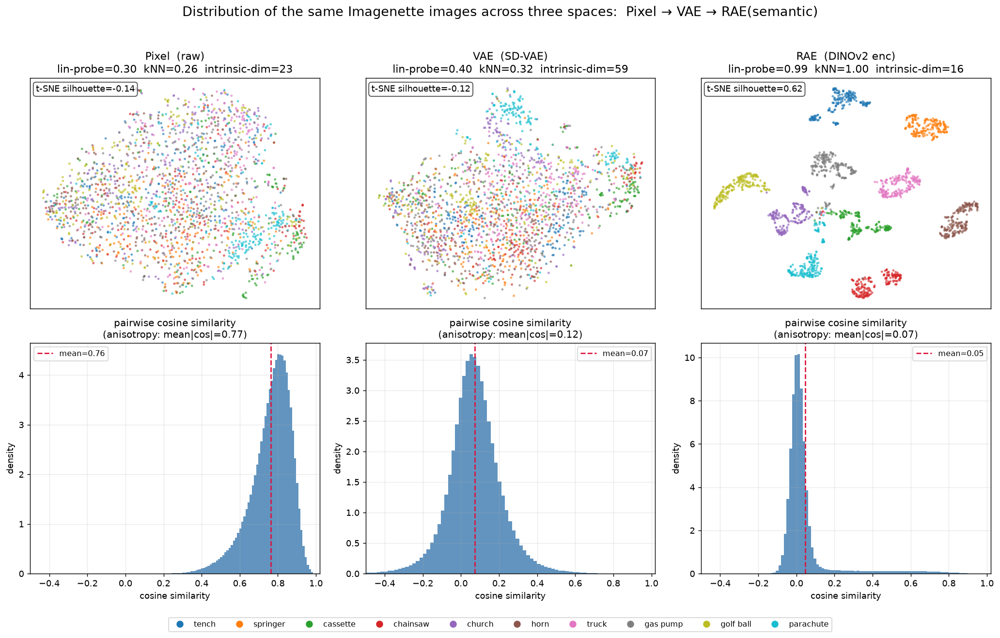
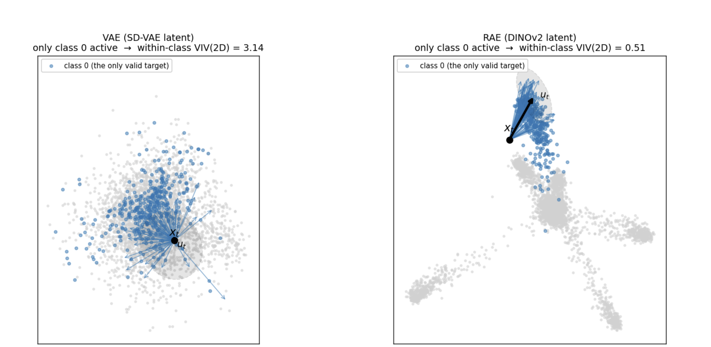
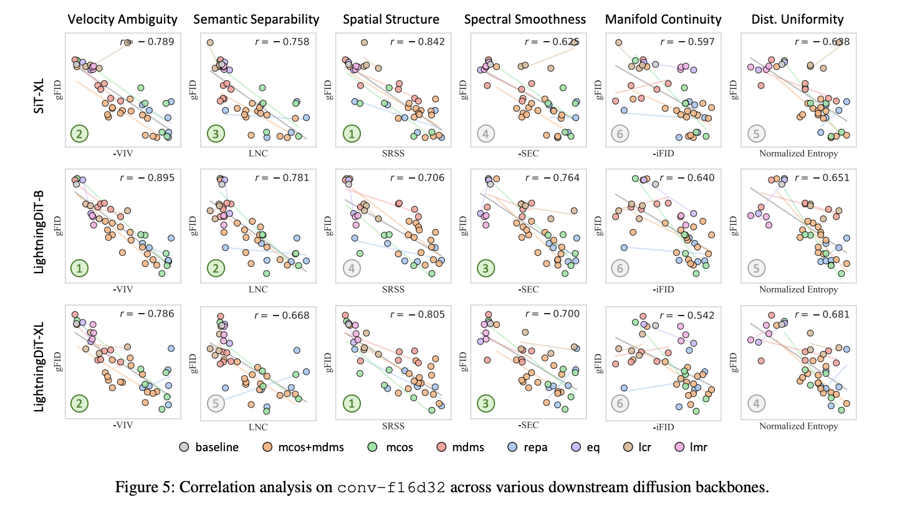
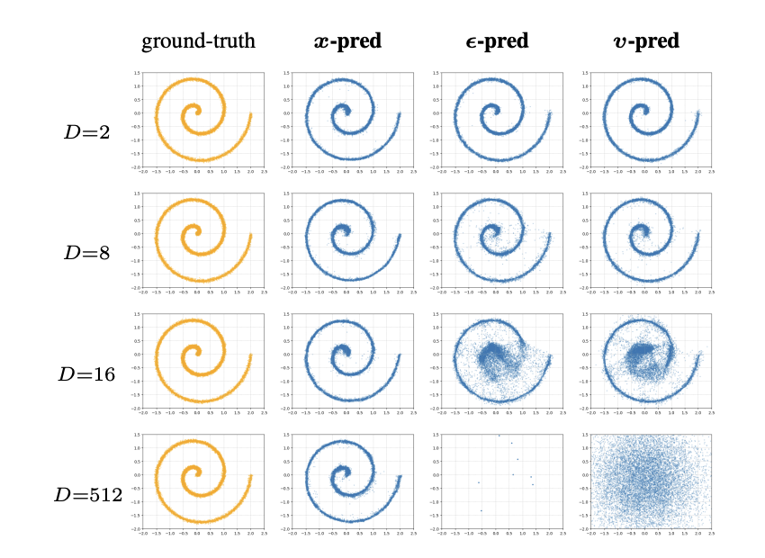

0. 前置知识
定义 Latent Space
我们常说 latent space，但是其与我们常规理解中一个线性空间 n 维的不同。就比如说同一个 size 的 VAE 和 DINO，其都在同一个 n 维度的线性空间中，理论上其属于同一个空间，但是其代表不同的 latent space。
以 256×256、三通道的 image 为例子，其存在的空间应该是一个 20w 维的空间，但是其中真实数据存在的区域是很稀疏的。简单的思考方式就是你从这个空间中随机填入数据，大概率就是获得一个噪声图像。这就是所谓流形假设，真实数据在高维空间的一个流形。
生成模型的本质，就是为了得到这个抽象的 pixel space 上的真实数据分布，但是我们对其只能进行采样，无法直接用某种方程或者某种模型来得到这个 pixel space。
因此所谓 Latent Space，就是对这个 20w 维度的空间（Pixel Space）进行转换，随之其中真实数据所在的流形也跟着变换了。

生成模型
本文大多数情况讨论标准 flow matching 的生成模型，这里给出数学定义（大概了解即可）。
目标. 给定源 $p_0=\mathcal{N}(0,I_D)$ 与目标 $p_1=p_{\text{data}}$，学一个速度场 $u_\theta:\mathbb{R}^D\times[0,1]\to\mathbb{R}^D$，使沿 ODE
演化的样本满足 $x_1\sim p_{\text{data}}$。
高斯插值路径. 取
边界 $\alpha_0=0,\sigma_0=1$（纯噪声），$\alpha_1=1,\sigma_1=0$（纯数据）。为具体取线性插值 $\alpha_t=t,\ \sigma_t=1-t$。
FM 训练目标 flow matching 回归条件速度：
逐样本目标 $x_1-x_0$，其最优解是边际速度场，也就是穿过这个点的所有速度的平均：
核心恒等式. 由 $x_t=t x_1+(1-t)x_0$ 得 $x_1-x_0=\dfrac{x_1-x_t}{1-t}$。记后验均值 $\hat x_1(x):=\mathbb{E}[x_1\mid x_t=x]$，则
1. 低维流形的困境
flow model 本身的生成开销随着图片的分辨率快速增长，因此对于图片空间的压缩就成了很自然的选择。在 diffusion 出现的时候，auto-encoder 相关技术已经比较成熟了。
但是为什么还需要在 ae 上加一个 v 呢，这就需要进一步思考一下了。
从 flow model 的视角审视 Pixel Space，就是我们要从高斯分布中采样，移动到真实分布上。
根据流形假设，真实图像所在的空间，只是 Pixel Space 上一个极其稀薄的流形。
flow model 的 ODE 流是可逆变换，而我们在高斯分布作为一个满维的分布，无法完美迁移到真实分布这个低维流形上。直观来看的话就是我们的真实分布是一个 0 厚度的薄纸，但是我们 flow 出来的目标分布会很贴近它，但是保留一点厚度，因为其是满维的。
这就导致了问题：我们能非常接近真实图像，但是没法达到真实图像分布。而因为 Flow Model 在 $t=1$ 的时候训练目标的奇异点，导致我们如果需要训一个良好的 Pixel Space Flow Model，实际上需要无限步的步数。VAE 的 KL 设计 + decoder 就尝试解决了这一点，其将处于真实图像分布上塑造成一个平滑的分布，我们在有限步数中达到这个平滑分布上，然后被 decoder 转换到真实数据分布上。
流形假设：真实数据并非均匀充满整个空间，而是集中分布在一个维度远低于 $D$ 的光滑低维流形 $\mathcal{M}$（及其邻域）之上，即存在内在维度 $d$。
这下问题就简单了。我们需要一个空间，首先最好能做压缩，因为空间太大了，很多无意义的算力浪费在空间中。根据流形假设，Pixel Space 中真实图像分布是有更小的内在维度的；其次，我们希望我们落到真实图像附近的时候，能有一个方案将其拉回真实图像上。根据上述思路我们就推导出了 VAE。
我们来看看 VAE 的训练 Loss：
VAE 的监督包括主要两个部分，重建项和正则项。首先我们要保证重建，希望我们的压缩尽可能无损；其次我们做好 KL 正则，则希望其边际分布为高斯，这样子可以将其拉回真实数据分布上。
但是在现在版本中，因为 KL 项和重建的效果有所冲突，而重建的质量也决定了生成的上限，因此 KL 往往都开得很小，Flow Model 本身已经承担了很多的逼近真实分布的任务。
2. 为什么 VAE 仍然不够
VAE 的数据分布满足了压缩和分布平滑的优良特性，确实也适合生成任务，但是对于 condition 生成，还是有问题。
我们知道 VAE 的监督是两个，一个压缩，一个 KL；实际上而言，这给 latent 空间的自由度仍然非常大，因此也有很多人尝试在 VAE 的 latent 空间上做一些正则等调整，来使其变得更优良。
了解 VAE 部分的人都知道，VAE 的重建指标和后续 flow model 在上面的训练效果并不相关联。人们想过很多 tricks 来调整 VAE，使其有更好的重建，但是结果是 VAE 上的 flow model 效果却并没有变得更好。
前段时间 Kling 那边有一篇文章，详细分析了哪些指标可以有效衡量 VAE 适配生成模型的程度，也就是所谓的好的 latent。下述指标就来自于这篇文章。
我们对于 VAE latent space 适配 flow model 的程度做一个良好的定义：对于一个给定的 FID 值，生成模型在上面训到这个 FID 值所需的时间，所需时间越少，自然这个空间越适合 flow model 学习。
回归到 flow model 的目标，它是在学习空间上某个点穿过这个点所有的速度的平均。假设我们是无限步的生成，选取平均其实无所谓，但是在有限步的生成中，学习平均就会有误差，这个误差自然是越小越好：
从直观上理解也非常合理，既然要用类别进行生成，那么自然同一类聚集在一个地方。假设一张猫的图片一个在南，一个在北，其学习出来的速度就会与真实偏差很大。

以下是该论文中，针对各项 VAE 指标做的关联性验证。

笔者曾经尝试过直接用 VIV 作为监督来优化 VAE，但是效果不太好。究其原因在于 VIV 的监督很简单也很好 hack，模型并不知道真正的语义组织的分布是怎么样的，因此只会在压缩各向异性上面 hack VIV。因此这个思路不如 VAVAE 中直接以 DINO 这些有良好语义结构的 vision encoder 对于 VAE 的监督。
包括 Minimax 的 VTP 上提到了让 VAE 进行持续优化的方案，也包括了通过 vision encoder 进行监督。
有了上述视角，VA-VAE、RAE 等工作的出发点就很好理解了：Vision Encoder 的先验可以有效帮助 latent space 变得适配 Diffusion。
待补充：做一个 latent 结构进行 DINO 训练，VIV 的变化的情况。
3. 回到 Pixel Space
早期在 latent diffusion model 快速发展的时候，人们也想了很多方案在 Pixel Space 上做 diffusion。随着算力的增长，Pixel Space 上的 flow model 也不是不能做，只是遇到更高分辨率的图像时还是撞到了 efficient 上的问题，实验需要更宽的模型才能处理高分辨率的生成过程。
这个也是由 flow model 本身定义导致的。Kaiming 老师的 Jit 中提出，预测噪声、速度和真实图像在理论上是可以互相转换的，但是在有限的网络容量中，只有在真实图像不会受到影响，因为：
- 预测噪声：噪声为满维度的；
- 预测速度：预测的是噪声和原始图像之间的差，也是满维度的。
这两个过程导致其不能存在低秩瓶颈。一旦其在模型中降维度了，就无法满足恒等映射了，这也就导致了模型需要越做越宽，或者我们只能在低分辨和压缩的 space 里面做生成。
而预测数据本身不同，预测数据本身的回归目标里面不存在满维限制，可以有效利用到真实数据本身更低的维度，从而以可控的成本达到 Pixel Space 的生成。

4. 未来应该是什么样的
在深度学习的视角里面，人们往往更倾向于端到端的方案。从这个视角来说，Pixel Space Generation 这种方案应该是更受青睐的。VLM 也在摆脱预训练 vision encoder 的制约，转向了 VLM 中联合优化 vision encoder 的思路，甚至进一步按照训练效率上的思路，连 vision encoder 本身也可以抛开。
基于此发散，在 Pixel Space 上统一生成与理解模型似乎是一个很好的路子，近期也看到了不少在 Pixel Space 上的生成理解统一模型，比如 SenseNova 系列。
通过上述思考我们也发现，latent space 的选择其实和上层的生成模型息息相关；VA-VAE 和 RAE 这种改进，都基于其是文生图的 flow model 上。这也不禁让人思考，在现在 world model 的叙事中，是否需要新的 latent space，有新的改进方案。
参考文章
- VAE
- RAE
- Jit
- VAVAE
- 科学空间：相关讨论
- arXiv: 2606.03578
- VTP